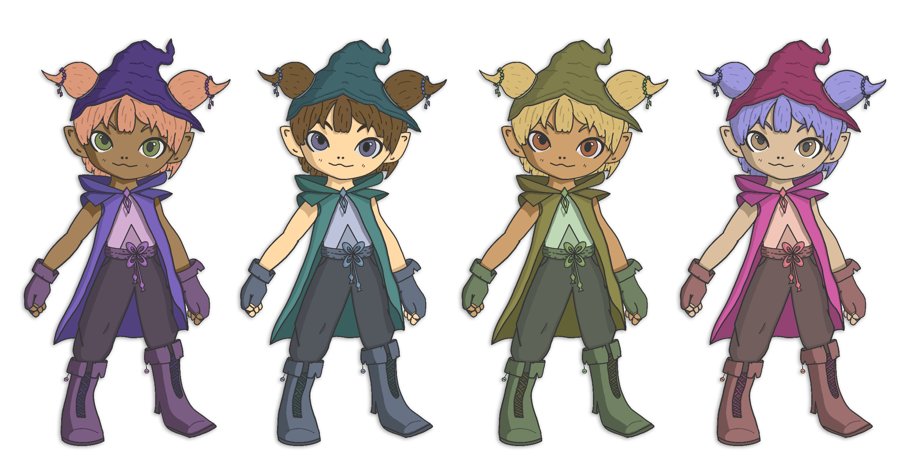

Introducción
Ashen es un brujo que vive en una ciudad tan encantadora como bulliciosa. Los habitantes de esta siempre necesitan su ayuda para completar tareas urgentes, por lo que Ashen debe desplazarse lo antes posible de un punto a otro con su escoba para completar los recados antes de que el tiempo se acabe. Con cada recado completado, gana unos valiosos segundos para mantener el reloj en marcha, pero si el tiempo llega a cero, ¡el juego termina!
Conoce a Ashen
Ashen es un alegre y curioso brujito que se dedica a realizar recados para ayudar a la gente de Stardust Town, la mágica ciudad donde vive. Su personalidad está llena de entusiasmo, y tiene un interés genuino en resolver los problemas de los demás. Aunque aún está en proceso de dominar sus habilidades mágicas, Ashen es perseverante y siempre está dispuesto a aprender, especialmente cuando se trata de hechizos útiles para el día a día en el pueblo.
Físicamente, Ashen tiene una apariencia encantadora y adaptable: su cabello y tono de piel pueden cambiarse para reflejar el estilo y la preferencia de cada jugador. Siempre viste ropas que combinan con su actitud vivaz y aventurera, y lleva consigo pequeños objetos encantados que le ayudan en sus tareas. Entre ellos se encuentra una pequeña brújula mágica que siempre apunta a quien necesita su ayuda, y una bolsa de encantamientos menores para resolver problemas cotidianos.
Ashen es un espíritu libre y se toma la vida con una mezcla de diversión y responsabilidad, lo que lo convierte en una figura querida en Stardust Town. A través de sus viajes, ha aprendido a valorar el poder de la amistad y la ayuda mutua, y esto lo motiva a seguir adelante con sus tareas y desafíos. A pesar de su carácter amigable, también puede ser un poco travieso, usando su magia para crear pequeñas sorpresas y alegrar el día de los habitantes del pueblo.

En Wicked Winds, tienes la libertad de personalizar a Ashen y adaptar su apariencia a tu estilo. Puedes cambiar el color de su cabello, ajustar el tono de su piel y seleccionar otros detalles que hagan único a este alegre brujito. La personalización permite que Ashen refleje tu propio toque mágico, dándole un aspecto especial mientras recorre la ciudad ayudando a sus habitantes.
Visita Stardust Town
Stardust Town es una encantadora ciudad de inspiración medieval, llena de toques mágicos y detalles fantásticos. Sus calles están iluminadas por farolas encantadas y adornadas con árboles y calderos mágicos que aportan un brillo especial al entorno. En el corazón de la ciudad se encuentra una plaza central animada, donde un mercadillo con coloridos puestos invita a explorar y descubrir los secretos de esta vibrante comunidad mágica.


Copyright © LoomLight 2024